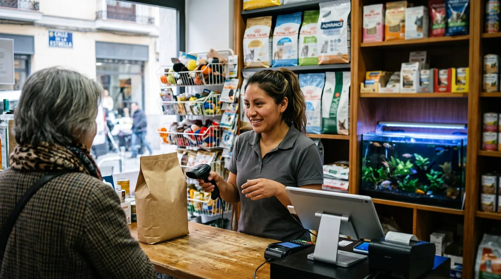

Cómo pagar suscripciones en línea desde Venezuela sin tarjeta bancaria
Encontraste el software que necesitas para tu negocio. Te convenció, hiciste la prueba, el precio te cuadra. Llegas a la pantalla de pago y ahí se acaba todo, porque te piden una tarjeta que tu banco no te da. No es un problema tuyo ni de tu negocio, y no se resuelve buscando otro proveedor: se resuelve cambiando el camino por el que sale el dinero. Hay tres caminos, los tres se usan todos los días en Venezuela, y ninguno exige que esperes a que la banca cambie.

Por qué se cae el pago, y por qué no es culpa tuya
Cuando una página de pago rechaza tu tarjeta venezolana no está juzgando tu negocio ni tu solvencia. Lo que ocurre es más simple: la mayoría de las tarjetas emitidas por la banca nacional operan en bolívares y dentro del país, y no están habilitadas para cobros internacionales en dólares. El cobro sale, viaja, y se cae en el camino.
Lecturas relacionadas: calculadora de comisiones de cobro, TPV para tienda de abarrotes y el alta en el SAT y el RESICO.
La consecuencia práctica es que el comerciante venezolano queda fuera de un mercado entero de herramientas que cuestan diez o veinte dólares al mes y que su competencia en otros países usa sin pensarlo: un software de caja, un hosting, un diseñador de etiquetas, una cuenta de publicidad, un almacenamiento de fotos. No es un lujo, es la infraestructura normal de un negocio pequeño en 2026.
Por eso se armó, sin que nadie lo planificara, un ecosistema paralelo de billeteras y de intercambio entre personas. No es informalidad ni truco: son empresas reguladas en otros países, con sus tarifarios publicados, que resolvieron un problema que la banca no resolvió. Lo que sigue es cómo se usan, con sus números y con sus pegas.
Las tres rutas, de un vistazo
Antes de entrar en el detalle, conviene ver el mapa completo. Las tres rutas conviven y muchos comercios usan dos a la vez, una para lo recurrente y otra para lo puntual.
| Ruta | Qué necesitas | Se renueva sola | Para quién es |
|---|---|---|---|
| Billetera con tarjeta virtual | Cédula o pasaporte, teléfono y saldo | Sí | Suscripciones mensuales, compras en línea, la opción por defecto |
| Pago directo en USDT | Cuenta en un exchange y que el proveedor lo acepte | No, es manual | Pagos grandes o puntuales, y proveedores que ya lo aceptan |
| Que pague un tercero | Un familiar o socio en el exterior con tarjeta | Sí, con su tarjeta | Quien ya tiene esa confianza montada y no quiere abrir nada |
Ruta 1: una billetera en dólares con tarjeta virtual
Es la vía más usada y la que recomendaría a un comerciante que empieza. Se abre una cuenta en una billetera digital que emite una tarjeta Visa o Mastercard virtual en dólares, se le mete saldo, y esa tarjeta se comporta en cualquier página de pago como una tarjeta normal. Con ella se paga Netflix, se compra en Amazon y se pagan trámites, así que también sirve para el software de tu negocio.
Las tres que aparecen una y otra vez en Venezuela son estas.
Zinli emite una tarjeta Visa virtual y opera desde Panamá, donde está su marco de cumplimiento. Su tarifario publicado, consultado en agosto de 2026, indica límites de hasta 500 dólares mensuales verificando con cédula y hasta 1.000 con pasaporte, con un tope superior asociado a su suscripción. La recarga con activos digitales aparece en 4 por ciento más 0,50 dólares, y la recarga con tarjeta de crédito o débito en 3,75 por ciento. La tarjeta física tiene costo aparte.
Wally trabaja con Mastercard y está respaldada por Banesco Panamá. En sus preguntas frecuentes, consultadas en la misma fecha, la recarga con tarjeta bancaria figura en 3,5 por ciento más un impuesto calculado sobre esa comisión, con un tope mensual de 3.000 dólares y la tarjeta virtual incluida al registrarse. La tarjeta física se pide aparte y se retira en puntos de entrega dentro de Venezuela.
Ubii Pagos es venezolana y su tarjeta prepagada se apoya en el Banco Venezolano de Crédito. Su fuerte es el otro lado del puente: recargar desde pago móvil y transferencias nacionales. Si tu prioridad es no salir del sistema bancario venezolano para cargar saldo, vale la pena compararla, revisando en la propia app hasta dónde llega su uso internacional, porque ese es justamente el punto que hay que probar.
Las tres piden verificación de identidad: cédula o pasaporte, un selfie en video y un correo. En 2026 esa verificación suele resolverse en el mismo día. Ninguna requiere que tengas cuenta bancaria fuera del país.
Cómo se le mete saldo desde Venezuela
Aquí está el paso que confunde a todo el mundo, y conviene decirlo sin rodeos: desde Venezuela no hay una vía directa que lleve bolívares a estas billeteras. Hay que pasar por un intercambio. En la práctica el camino tiene dos tramos y, una vez abiertas las cuentas, toma unos diez minutos.
- Comprar USDT con bolívares. En el mercado entre personas de un exchange compras USDT y pagas en bolívares por pago móvil o transferencia. El sistema retiene los fondos en garantía hasta que el vendedor confirma que recibió tu pago, y eso es lo que hace viable operar con un desconocido.
- Convertir ese USDT en saldo de la billetera. Se hace de dos maneras. La primera es vender el USDT a otro usuario que paga con esa billetera: eliges la billetera como método de pago y pones tu correo registrado, que ahí funciona como número de cuenta. La segunda es usar la opción de recarga con activos digitales dentro de la propia aplicación, que es más cómoda y suele salir más cara.
- Pagar. Con la tarjeta ya cargada entras a la página del proveedor y pagas como con cualquier tarjeta. Si el servicio se renueva solo, a partir de ahí solo tienes que mantener saldo.
Un detalle que evita disgustos: cuando compares ofertas en el mercado entre personas, mira el precio y el límite, no solo la reputación del vendedor. Y guarda el comprobante de cada tramo.
Ruta 2: pagarle al proveedor en USDT
Si el proveedor lo acepta, esta ruta se salta la billetera entera. Compras el USDT igual que en el primer tramo de arriba y se lo envías directamente. No hay tarjeta, no hay rechazo posible, no hay comisión de recarga.
Sus dos límites son reales. El primero es que muy pocos proveedores internacionales lo tienen montado, aunque cada vez más lo aceptan si se lo pides por escrito. El segundo es que no se renueva solo: cada mes hay que acordarse, hacer la transferencia y avisar. Para un pago anual es cómodo. Para un pago mensual, la experiencia de mucha gente es que tarde o temprano se olvida y el servicio se corta en mal momento.
Sobre el marco legal conviene no improvisar. La actividad con criptoactivos en Venezuela está sujeta a registro y licencias ante la Superintendencia Nacional de Criptoactivos, y ese organismo atravesó una intervención que dejó al sector sin una autoridad claramente operativa. Que sea de uso masivo no significa que sea indiferente para tu contabilidad. Si estos pagos van a ser un gasto habitual de tu negocio, habla con tu contador sobre cómo registrarlos.
Ruta 3: que pague alguien por ti
Es la más vieja y sigue funcionando: un hijo, un hermano o un socio en el exterior pone su tarjeta, y tú le devuelves el dinero en bolívares o en USDT. Cero comisiones de plataforma, cero cuentas nuevas.
Los problemas aparecen después, y son de gestión más que de dinero. La suscripción queda a nombre de otra persona, con su correo y su tarjeta, así que cuando haya que cambiar de plan, recuperar una contraseña o reclamar algo, dependes de su disponibilidad. Y la factura sale a su nombre, lo que no ayuda si algún día necesitas justificar ese gasto como del negocio. Sirve para arrancar. No es donde conviene quedarse.
Lo que hay que revisar antes de dar el primer pago
Cuatro comprobaciones de un minuto cada una que evitan la mayoría de los tropiezos.
- Prueba con el monto más pequeño. Si el proveedor tiene plan mensual y plan anual, paga primero un mes. Confirmas que la tarjeta pasa antes de comprometer doce.
- Mira en qué moneda te cobran. Si el precio está en euros y tu tarjeta está en dólares, hay una conversión de por medio y el monto debitado no será exactamente el que viste. No es un cobro oculto, pero descuadra la cuenta si no lo esperabas.
- Deja colchón de saldo. El motivo número uno de suspensión no es que la tarjeta falle, es que el día de la renovación no había saldo. Deja siempre algo por encima del monto mensual.
- Pide la factura. El comprobante de la billetera no es una factura. La factura la emite el proveedor del servicio y es independiente del medio de pago que usaste.
Cuánto cuesta cada ruta
El costo real está en cargar el saldo, no en gastarlo. Estas son las cifras publicadas por las propias plataformas y consultadas en agosto de 2026, con la advertencia de siempre: cambian, y hay que mirar el tarifario vigente antes de calcular.
| Concepto | Orden de magnitud | Comentario |
|---|---|---|
| Comprar USDT con bolívares | El diferencial del mercado entre personas | Depende de la oferta que elijas, compara antes de aceptar |
| Recarga con activos digitales en la app | Alrededor de 4 % más 0,50 USD en Zinli | Cómoda y más cara que vender el USDT a otro usuario |
| Recarga con tarjeta bancaria | 3,5 % en Wally, 3,75 % en Zinli | Solo sirve si ya tienes una tarjeta que funcione |
| Pagar con la tarjeta ya cargada | Sin comisión adicional en los tarifarios consultados | Es el tramo barato, el costo ya se pagó al recargar |
| Mantenimiento de la cuenta | Cifras distintas según la fuente | Revísalo en la app, no en un blog, incluido este |
Traducido a un caso concreto: para una suscripción de unos 10 dólares al mes, el sobrecosto de pagarla por esta vía se mide en centavos, no en dólares. Lo caro no es la comisión, es quedarte sin la herramienta.
Los riesgos que sí existen
No serviría de nada una guía que solo cuente la parte cómoda. Hay tres riesgos reales y los tres se manejan.
La cuenta congelada. Estas plataformas están obligadas a vigilar el origen de los fondos. Un movimiento que no cuadra con tu perfil declarado puede terminar en una revisión y en el saldo retenido mientras tanto. La defensa es aburrida y eficaz: verifica bien tu identidad desde el principio, guarda los comprobantes y no uses tu cuenta personal para mover dinero de terceros.
El fraude en el intercambio entre personas. El sistema de garantía protege la operación mientras ocurre dentro de la plataforma. Todo el fraude conocido consiste en sacarte de ahí: que te pidan liberar los fondos antes de recibir el pago, que te muestren una captura de una transferencia que nunca salió, que te propongan seguir la conversación por otro canal. La regla es una sola y no tiene excepciones: no liberas nada hasta ver el dinero en tu cuenta, y nunca por fuera de la plataforma.
El olvido. Suena menor y es el que más daño hace. Un servicio que se corta el día que lo necesitas cuesta más que cualquier comisión. Ponte un recordatorio unos días antes de cada renovación.
Qué exigirle al proveedor del servicio
Hay una parte que no depende de ti. Un proveedor que entiende cómo se paga en Venezuela te ahorra la mitad de esta guía, y hay tres señales que lo delatan.
La primera es que tenga un plan gratuito de verdad, no una prueba de catorce días. Si puedes trabajar sin pagar mientras montas tu ruta de pago, el problema deja de ser urgente. La segunda es que te responda por escrito si acepta USDT o si puede facturarte por año en lugar de por mes, que reduce el trámite a una vez. La tercera es que no te obligue a pasar por su procesador de pagos para cobrarle a tus propios clientes, porque eso sí es una dependencia difícil de deshacer.
digabloPos
Lo traemos aquí porque cumple las tres condiciones de arriba, no porque sea la única opción del mercado. Su plan base es gratuito de forma permanente y cubre ventas ilimitadas, funcionamiento completo sin conexión con sincronización posterior, plan de sala, lotes con fecha de vencimiento y dos empleados, con 30 días de historial. Eso significa que un comercio venezolano puede empezar a trabajar el mismo día, sin resolver antes el asunto del pago. Tampoco impone comisión ni procesador de pago sobre lo que tú cobras: sigues cobrando en efectivo, en divisas o por transferencia como te convenga.
Y ahora la parte que hay que decir. Los módulos son de pago y se contratan aparte, entre ellos la multimoneda, publicada en unos 10 dólares al mes cuando lo consultamos en agosto de 2026, que para un negocio que cobra en bolívares y en dólares no es opcional. Ahí es exactamente donde aparece el problema de esta guía, y donde las rutas de arriba lo resuelven. Las tarifas cambian, revisa la lista vigente antes de contratar.
En lo fiscal, digabloPos se describe como preparado para la facturación electrónica y tiene certificación fiscal únicamente en Francia, no una homologación venezolana. Desde el 12 de agosto de 2026, con la derogación de la providencia que exigía contratar el software a un proveedor homologado por el SENIAT, ya no existe una lista cerrada de proveedores autorizados. La máquina fiscal, en cambio, se rige por su propia normativa: confírmala con tu contador.
👍 Puntos fuertes
- Plan gratuito permanente, se empieza sin pagar nada
- Sin comisión obligatoria sobre tus propios cobros
- Sin conexión de verdad, con inventario y saldos incluidos
- Multimoneda con tasa propia del establecimiento
👎 A verificar
- La multimoneda es un módulo de pago, unos 10 dólares al mes
- El plan gratuito guarda 30 días de historial
- Sin homologación venezolana, confirma tu máquina fiscal
- Marca joven en el país, pide una demostración en vivo
Empieza sin resolver antes el pago
Monta tu caja con el plan gratuito y deja el asunto de la tarjeta para el día que necesites un módulo.
Probar digabloPos gratisPreguntas frecuentes
¿Se puede pagar un servicio en línea desde Venezuela sin tarjeta bancaria?
Sí, y es lo que hace la mayoría. La vía más común es abrir una billetera en dólares que entrega una tarjeta virtual internacional, cargarle saldo y pagar con ella como con cualquier tarjeta. La segunda vía es pagarle al proveedor directamente en USDT, si lo acepta. La tercera es que un familiar o un socio en el exterior pague por ti. Ninguna de las tres exige que tu banco venezolano te dé una tarjeta internacional.
¿Cómo le meto saldo en dólares a una tarjeta virtual desde Venezuela?
Desde Venezuela no hay una vía directa en bolívares hacia estas billeteras. En la práctica se hace en dos pasos: primero compras USDT en un exchange pagando en bolívares por pago móvil o transferencia, y después cambias ese USDT por saldo en tu billetera, ya sea vendiéndoselo a otro usuario que paga en esa billetera o usando la recarga con activos digitales de la propia app. Cada paso tiene su comisión, así que compara antes de mover el dinero.
¿Cuánto cuesta de verdad pagar por esta vía?
El costo está en la recarga, no en la compra. Según los tarifarios publicados por las propias billeteras y consultados en agosto de 2026, recargar con activos digitales ronda el 4 por ciento más medio dólar en un caso, y recargar con tarjeta bancaria ronda el 3,5 por ciento en otro, sin contar el diferencial del exchange. Pagar con la tarjeta ya cargada no suele tener comisión adicional. Revisa el tarifario vigente antes de calcular, porque cambian.
¿Funcionan estas tarjetas para suscripciones que se renuevan solas?
En general sí, son tarjetas Visa o Mastercard prepagadas y se usan a diario para servicios de suscripción. El punto de cuidado no es técnico sino de saldo: si el día de la renovación la tarjeta está en cero, el cobro se rechaza y el servicio se suspende. Deja un colchón por encima del monto mensual y revisa el saldo unos días antes de la fecha de cobro.
¿Es legal pagar con USDT desde Venezuela?
La actividad con criptoactivos está sujeta a registro y licencias ante la Superintendencia Nacional de Criptoactivos, y ese organismo pasó por una intervención que dejó el panorama regulatorio poco claro. Que miles de personas lo usen a diario no equivale a un pronunciamiento sobre tu caso particular ni sobre cómo debes declararlo. Si el monto pesa en tu negocio, consúltalo con tu contador antes de convertirlo en tu método habitual.
¿Qué comprobante me queda para la contabilidad?
Pide siempre la factura al proveedor del servicio, que es independiente del medio de pago que usaste. Guarda además el comprobante de la billetera y el del exchange, porque la trazabilidad del origen de los fondos es justamente lo que revisan estas plataformas cuando congelan una cuenta. Un pago sin rastro sale barato hoy y caro el día que te toca explicarlo.
La herramienta primero, el pago después
Ningún comercio debería quedarse sin sistema de caja porque la pantalla de pago no acepta su tarjeta.
Crear mi caja gratisFuentes
Las tarifas y los límites de estas plataformas cambian sin aviso. Estas son las páginas que hay que mirar antes de decidir, no un artículo.
- Zinli, preguntas frecuentes y tarifario: comisiones por método de recarga, límites por documento y costos de tarjeta.
- Wally, preguntas frecuentes: métodos de recarga, comisión por tarjeta bancaria y tope mensual.
- Banco Central de Venezuela: tipo de cambio de referencia, útil para calcular lo que te cuesta en bolívares.